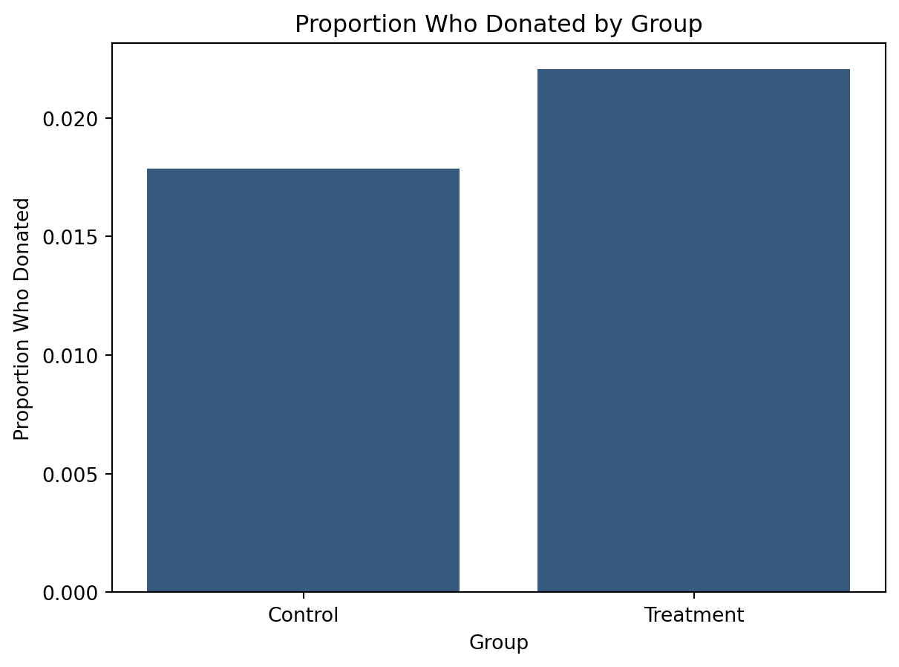
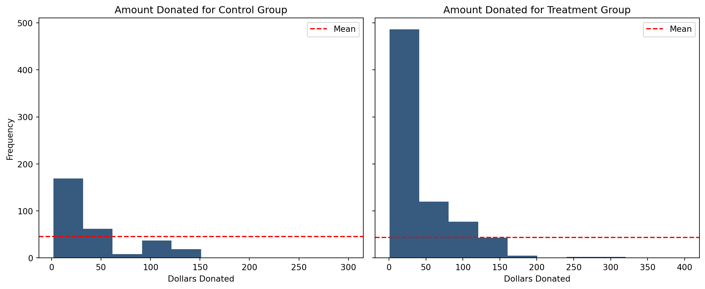
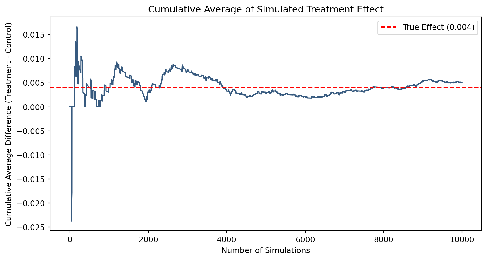
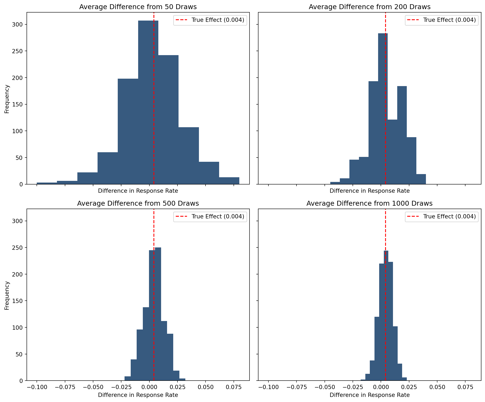

df = pd.read_stata('karlan_list_2007.dta')A Replication of Karlan and List (2007)
School
MGTA495
Introduction
Dean Karlan at Yale and John List at the University of Chicago conducted a field experiment to test the effectiveness of different fundraising letters. They sent out 50,000 fundraising letters to potential donors, randomly assigning each letter to one of three treatments: a standard letter, a matching grant letter, or a challenge grant letter. They published the results of this experiment in the American Economic Review in 2007. The article and supporting data are available from the AEA website and from Innovations for Poverty Action as part of Harvard’s Dataverse.
to do: expand on the description of the experiment.
This project seeks to replicate their results.
Data
Description
todo: Read the data into R/Python and describe the data
Balance Test
As an ad hoc test of the randomization mechanism, I provide a series of tests that compare aspects of the treatment and control groups to assess whether they are statistically significantly different from one another.
todo: test a few variables other than the key outcome variables (for example, test months since last donation) to see if the treatment and control groups are statistically significantly different at the 95% confidence level. For at least one variable, perform the test as both t-test (use the formula in the class slides) and separately as a linear regression (regress for example mrm2 on treatment); confirm both methods yield the exact same results. It might be helpful to compare parts of your analysis to Table 1 in the paper. Be sure to comment on your results (hint: why is Table 1 included in the paper).
test_variables = ['hpa', 'freq', 'female', 'redcty', 'bluecty']
for var in test_variables:
control = df.loc[df.treatment == 0, var].dropna()
treatment = df.loc[df.treatment == 1, var].dropna()
t_stat, pval = ttest_ind(control, treatment)
print(f'''
T-test results for {var}:
t-statistic: {t_stat}
p-value: {pval}
At the 95% confidence level, we {pval < 0.05 and "reject" or "fail to reject"} the null hypothesis that the mean value from the two samples are equal.''')
m = rsm.model.regress(data=df,
rvar=var,
evar=['treatment'],
)
print(f'Linear regression results for {var}:')
print(m.summary(main=False))
T-test results for hpa:
t-statistic: -0.944145044786662
p-value: 0.34510008823759086
At the 95% confidence level, we fail to reject the null hypothesis that the mean value from the two samples are equal.
Linear regression results for hpa:
R-squared: 0.0, Adjusted R-squared: -0.0
F-statistic: 0.891 df(1, 50081), p.value 0.345
Nr obs: 50,083
None
T-test results for freq:
t-statistic: 0.11089297035979982
p-value: 0.9117016644344591
At the 95% confidence level, we fail to reject the null hypothesis that the mean value from the two samples are equal.
Linear regression results for freq:
R-squared: 0.0, Adjusted R-squared: -0.0
F-statistic: 0.012 df(1, 50081), p.value 0.912
Nr obs: 50,083
None
T-test results for female:
t-statistic: 1.7583691871450704
p-value: 0.07869095826986476
At the 95% confidence level, we fail to reject the null hypothesis that the mean value from the two samples are equal.
Linear regression results for female:
R-squared: 0.0, Adjusted R-squared: 0.0
F-statistic: 3.092 df(1, 48970), p.value 0.079
Nr obs: 48,972
None
T-test results for redcty:
t-statistic: -0.9041867297482356
p-value: 0.3659007540247129
At the 95% confidence level, we fail to reject the null hypothesis that the mean value from the two samples are equal.
Linear regression results for redcty:
R-squared: 0.0, Adjusted R-squared: -0.0
F-statistic: 0.818 df(1, 49976), p.value 0.366
Nr obs: 49,978
None
T-test results for bluecty:
t-statistic: 0.8535382534940722
p-value: 0.3933649744168656
At the 95% confidence level, we fail to reject the null hypothesis that the mean value from the two samples are equal.
Linear regression results for bluecty:
R-squared: 0.0, Adjusted R-squared: -0.0
F-statistic: 0.729 df(1, 49976), p.value 0.393
Nr obs: 49,978
NoneExperimental Results
Charitable Contribution Made
First, I analyze whether matched donations lead to an increased response rate of making a donation.
todo: make a barplot with two bars. Each bar is the proportion of people who donated. One bar for treatment and one bar for control.
todo: run a t-test between the treatment and control groups on the binary outcome of whether any charitable donation was made (you can do this as a bivariate linear regression if you want). It may help to confirm your calculations match Table 2a Panel A. Report your statistical results and interpret them in the context of the experiment (e.g., if you found a difference with a small p-value or something that was statistically significant at some threshold, what have you learned about human behavior? Use mostly English words, not numbers or stats, to explain your finding.)
todo: run a probit regression where the outcome variable is whether any charitable donation was made and the explanatory variable is assignment to treatment or control.
NOTE: Linear regression results appear replicate Table 3 column 1 in the paper. Probit results do not, despite Table 3 indicating its results come from probit regressions…
gave_df = df.groupby('treatment')['gave'].mean()
gave_df.index = gave_df.index.map({0: 'Control', 1: 'Treatment'})
plt.bar(gave_df.index, gave_df.values)
plt.title('Proportion Who Donated by Group')
plt.xlabel('Group')
plt.ylabel('Proportion Who Donated')
plt.show()
control = df.loc[df.treatment == 0, 'gave'].dropna()
treatment = df.loc[df.treatment == 1, 'gave'].dropna()
t_stat, pval = ttest_ind(control, treatment)
print(f'''
T-test results:
t-statistic: {t_stat}
p-value: {pval}
At the 95% confidence level, we {pval < 0.05 and "reject" or "fail to reject"} the null hypothesis that the response rate of the two samples are equal.''')
probit_model = smf.probit('gave ~ treatment', data=df).fit()
print('Probit Regression Results:')
print(probit_model.summary())
T-test results:
t-statistic: -3.101361000543946
p-value: 0.0019274025949016982
At the 95% confidence level, we reject the null hypothesis that the response rate of the two samples are equal.
Optimization terminated successfully.
Current function value: 0.100443
Iterations 7
Probit Regression Results:
Probit Regression Results
==============================================================================
Dep. Variable: gave No. Observations: 50083
Model: Probit Df Residuals: 50081
Method: MLE Df Model: 1
Date: Tue, 22 Apr 2025 Pseudo R-squ.: 0.0009783
Time: 23:11:48 Log-Likelihood: -5030.5
converged: True LL-Null: -5035.4
Covariance Type: nonrobust LLR p-value: 0.001696
==============================================================================
coef std err z P>|z| [0.025 0.975]
------------------------------------------------------------------------------
Intercept -2.1001 0.023 -90.073 0.000 -2.146 -2.054
treatment 0.0868 0.028 3.113 0.002 0.032 0.141
==============================================================================Differences between Match Rates
Next, I assess the effectiveness of different sizes of matched donations on the response rate.
todo: Use a series of t-tests to test whether the size of the match ratio has an effect on whether people donate or not. For example, does the 2:1 match rate lead increase the likelihood that someone donates as compared to the 1:1 match rate? Do your results support the “figures suggest” comment the authors make on page 8?
todo: Assess the same issue using a regression. Specifically, create the variable ratio1 then regress gave on ratio1, ratio2, and ratio3 (or alternatively, regress gave on the categorical variable ratio). Interpret the coefficients and their statistical precision.
todo: Calculate the response rate difference between the 1:1 and 2:1 match ratios and the 2:1 and 3:1 ratios. Do this directly from the data, and do it by computing the differences in the fitted coefficients of the previous regression. what do you conclude regarding the effectiveness of different sizes of matched donations?
df['ratio'] = df['ratio'].astype(str)
df['ratio'] = pd.Categorical(df['ratio'], categories=['Control', '1', '2', '3'], ordered=True)
ratio_df = df.groupby('ratio')['gave'].mean()
display(ratio_df)
for ratio in ['1', '2', '3']:
g1 = ratio
for alt_ratio in ['1', '2', '3']:
if g1 == alt_ratio:
continue
g2 = alt_ratio
group1 = df.loc[df.ratio == g1, 'gave'].dropna()
group2 = df.loc[df.ratio == g2, 'gave'].dropna()
t_stat, pval = ttest_ind(group1, group2)
print(f'''
Response rate for {g1}:1 - {group1.mean()}
Response rate for {g2}:1 - {group2.mean()}
t-statistic: {t_stat}
p-value: {pval}
At the 95% confidence level, we {pval < 0.05 and "reject" or "fail to reject"} the null hypothesis that the response rate of ratio {g1}:1 and {g2}:1 are equal.''')
probit_model2 = smf.probit('gave ~ ratio', data=df).fit()
print(probit_model2.summary())
treatment_df = df.loc[df.treatment == 1].copy()
treatment_df = treatment_df[['gave', 'ratio']].dropna()
treatment_df['ratio'] = pd.Categorical(
treatment_df['ratio'],
categories=['1', '2', '3'],
ordered=True
)
probit_model3 = smf.probit('gave ~ ratio', data=treatment_df).fit()
print(probit_model3.summary())
print(f'Difference between 3:1 response rate and 2:1 response rate: {ratio_df['3'] - ratio_df['2']}')
print(f'Difference between 2:1 response rate and 1:1 response rate: {ratio_df['2'] - ratio_df['1']}')
mfx = probit_model2.get_margeff()
marginal_effects = mfx.margeff
diff_3_vs_2 = marginal_effects[2] - marginal_effects[1]
diff_2_vs_1 = marginal_effects[1] - marginal_effects[0]
print(f"Estimated difference between 3:1 response rate and 2:1 response rate:: {diff_3_vs_2:.4f}")
print(f"Estimated difference between 2:1 response rate and 1:1 response rate: {diff_2_vs_1:.4f}")/tmp/ipykernel_35226/2166398160.py:4: FutureWarning:
The default of observed=False is deprecated and will be changed to True in a future version of pandas. Pass observed=False to retain current behavior or observed=True to adopt the future default and silence this warning.
ratio
Control 0.017858
1 0.020749
2 0.022633
3 0.022733
Name: gave, dtype: float64
Response rate for 1:1 - 0.020749124225276205
Response rate for 2:1 - 0.0226333752469912
t-statistic: -0.96504713432247
p-value: 0.33453168549723933
At the 95% confidence level, we fail to reject the null hypothesis that the response rate of ratio 1:1 and 2:1 are equal.
Response rate for 1:1 - 0.020749124225276205
Response rate for 3:1 - 0.022733399227244138
t-statistic: -1.0150255853798622
p-value: 0.3101046637086672
At the 95% confidence level, we fail to reject the null hypothesis that the response rate of ratio 1:1 and 3:1 are equal.
Response rate for 2:1 - 0.0226333752469912
Response rate for 1:1 - 0.020749124225276205
t-statistic: 0.96504713432247
p-value: 0.33453168549723933
At the 95% confidence level, we fail to reject the null hypothesis that the response rate of ratio 2:1 and 1:1 are equal.
Response rate for 2:1 - 0.0226333752469912
Response rate for 3:1 - 0.022733399227244138
t-statistic: -0.05011583793874515
p-value: 0.9600305283739325
At the 95% confidence level, we fail to reject the null hypothesis that the response rate of ratio 2:1 and 3:1 are equal.
Response rate for 3:1 - 0.022733399227244138
Response rate for 1:1 - 0.020749124225276205
t-statistic: 1.0150255853798622
p-value: 0.3101046637086672
At the 95% confidence level, we fail to reject the null hypothesis that the response rate of ratio 3:1 and 1:1 are equal.
Response rate for 3:1 - 0.022733399227244138
Response rate for 2:1 - 0.0226333752469912
t-statistic: 0.05011583793874515
p-value: 0.9600305283739325
At the 95% confidence level, we fail to reject the null hypothesis that the response rate of ratio 3:1 and 2:1 are equal.
Optimization terminated successfully.
Current function value: 0.100430
Iterations 7
Probit Regression Results
==============================================================================
Dep. Variable: gave No. Observations: 50083
Model: Probit Df Residuals: 50079
Method: MLE Df Model: 3
Date: Tue, 22 Apr 2025 Pseudo R-squ.: 0.001108
Time: 23:11:48 Log-Likelihood: -5029.8
converged: True LL-Null: -5035.4
Covariance Type: nonrobust LLR p-value: 0.01091
==============================================================================
coef std err z P>|z| [0.025 0.975]
------------------------------------------------------------------------------
Intercept -2.1001 0.023 -90.073 0.000 -2.146 -2.054
ratio[T.1] 0.0616 0.036 1.726 0.084 -0.008 0.132
ratio[T.2] 0.0980 0.035 2.792 0.005 0.029 0.167
ratio[T.3] 0.0998 0.035 2.847 0.004 0.031 0.169
==============================================================================
Optimization terminated successfully.
Current function value: 0.105851
Iterations 7
Probit Regression Results
==============================================================================
Dep. Variable: gave No. Observations: 33396
Model: Probit Df Residuals: 33393
Method: MLE Df Model: 2
Date: Tue, 22 Apr 2025 Pseudo R-squ.: 0.0001844
Time: 23:11:49 Log-Likelihood: -3535.0
converged: True LL-Null: -3535.6
Covariance Type: nonrobust LLR p-value: 0.5211
==============================================================================
coef std err z P>|z| [0.025 0.975]
------------------------------------------------------------------------------
Intercept -2.0385 0.027 -75.373 0.000 -2.092 -1.986
ratio[T.2] 0.0363 0.038 0.965 0.335 -0.037 0.110
ratio[T.3] 0.0382 0.038 1.015 0.310 -0.036 0.112
==============================================================================
Difference between 3:1 response rate and 2:1 response rate: 0.00010002398025293902
Difference between 2:1 response rate and 1:1 response rate: 0.0018842510217149944
Estimated difference between 3:1 response rate and 2:1 response rate:: 0.0001
Estimated difference between 2:1 response rate and 1:1 response rate: 0.0018Size of Charitable Contribution
In this subsection, I analyze the effect of the size of matched donation on the size of the charitable contribution.
todo: Calculate a t-test or run a bivariate linear regression of the donation amount on the treatment status. What do we learn from doing this analysis?
todo: now limit the data to just people who made a donation and repeat the previous analysis. This regression allows you to analyze how much respondents donate conditional on donating some positive amount. Interpret the regression coefficients – what did we learn? Does the treatment coefficient have a causal interpretation?
todo: Make two plots: one for the treatment group and one for the control. Each plot should be a histogram of the donation amounts only among people who donated. Add a red vertical bar or some other annotation to indicate the sample average for each plot.
control = df.loc[df.treatment == 0, 'amount'].dropna()
treatment = df.loc[df.treatment == 1, 'amount'].dropna()
t_stat, pval = ttest_ind(control, treatment)
print(f'''
T-test results:
t-statistic: {t_stat}
p-value: {pval}
At the 95% confidence level, we {pval < 0.05 and "reject" or "fail to reject"} the null hypothesis that the donation amount of the two samples are equal.''')
control = df.loc[(df.treatment == 0) & (df.gave == 1), 'amount'].dropna()
treatment = df.loc[(df.treatment == 1) & (df.gave == 1), 'amount'].dropna()
t_stat, pval = ttest_ind(control, treatment)
print(f'''
T-test results:
t-statistic: {t_stat}
p-value: {pval}
At the 95% confidence level, we {pval < 0.05 and "reject" or "fail to reject"} the null hypothesis that the donation amount of the two samples are equal.''')
fig, axes = plt.subplots(1, 2, figsize=(12, 5), sharey=True)
axes[0].set_ylabel("Frequency")
for val in [0, 1]:
subset = df.loc[(df.gave == 1) & (df.treatment == val)].copy()
axes[val].hist(subset['amount'], bins=10)
axes[val].axhline(y=subset['amount'].mean(), color='r', linestyle='--', label='Mean')
axes[val].legend()
axes[val].set_title(f'Amount Donated for {"Treatment" if val == 1 else "Control"} Group')
axes[val].set_xlabel("Dollars Donated")
plt.tight_layout()
plt.show()
T-test results:
t-statistic: -1.8605020225753781
p-value: 0.06282038947470686
At the 95% confidence level, we fail to reject the null hypothesis that the donation amount of the two samples are equal.
T-test results:
t-statistic: 0.5808388615237938
p-value: 0.5614758782284279
At the 95% confidence level, we fail to reject the null hypothesis that the donation amount of the two samples are equal.
Simulation Experiment
As a reminder of how the t-statistic “works,” in this section I use simulation to demonstrate the Law of Large Numbers and the Central Limit Theorem.
Suppose the true distribution of respondents who do not get a charitable donation match is Bernoulli with probability p=0.018 that a donation is made.
Further suppose that the true distribution of respondents who do get a charitable donation match of any size is Bernoulli with probability p=0.022 that a donation is made.
Law of Large Numbers
to do: Simulate 10,000 draws from the control distribution and 10,000 draws from the treatment distribution. You’ll then calculate a vector of 10,000 differences, and then you’ll plot the cumulative average of that vector of differences. This average will likely be “noisey” when only averaging a few numbers, but should “settle down” and approximate the treatment effect (0.004 = 0.022 - 0.018) as the sample size gets large. Explain the chart to the reader.
ctr_p = 0.018
trt_p = 0.022
np.random.seed(12)
sim_ctr = np.random.binomial(n=1, p=ctr_p, size=10_000)
sim_trt = np.random.binomial(n=1, p=trt_p, size=10_000)
sim_diff = sim_trt - sim_ctr
cumulative_avg = np.cumsum(sim_diff) / np.arange(1, len(sim_diff) + 1)
plt.figure(figsize=(10, 5))
plt.plot(cumulative_avg)
plt.axhline(y=trt_p - ctr_p, color='red', linestyle='--', label='True Effect (0.004)')
plt.title('Cumulative Average of Simulated Treatment Effect')
plt.xlabel('Number of Simulations')
plt.ylabel('Cumulative Average Difference (Treatment - Control)')
plt.legend()
plt.show()
Central Limit Theorem
to do: Make 4 histograms at sample sizes 50, 200, 500, and 1000. To do this for a sample size of e.g. 50, take 50 draws from each of the control and treatment distributions, and calculate the average difference between those draws. Then repeat that process 999 more times so that you have 1000 averages. Plot the histogram of those averages. The repeat for the other 3 histograms. Explain this sequence of histograms and its relationship to the central limit theorem to the reader.
fig, axes = plt.subplots(2, 2, figsize=(12, 10), sharey=True, sharex=True)
axes = axes.flatten()
axes[0].set_ylabel("Frequency")
axes[2].set_ylabel("Frequency")
for ax, size in enumerate([50, 200, 500, 1000]):
samples = []
for i in range(1000):
sim_ctr = np.random.binomial(n=1, p=ctr_p, size=size)
sim_trt = np.random.binomial(n=1, p=trt_p, size=size)
sim_diff_mean = sim_trt.mean() - sim_ctr.mean()
samples.append(sim_diff_mean)
axes[ax].hist(samples, bins=10)
axes[ax].axvline(x=trt_p - ctr_p, color='red', linestyle='--', label='True Effect (0.004)')
axes[ax].legend()
axes[ax].set_title(f'Average Difference from {size} Draws')
axes[ax].set_xlabel("Difference in Response Rate")
plt.tight_layout()
plt.show()